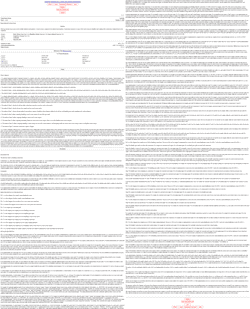
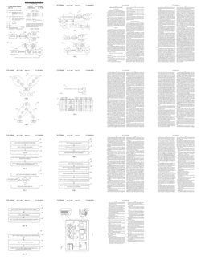

This is a tip for all you aspiring advanced SEOs out there. If you’re serious about achieving SEO greatness, then you’ve probably realized what a valuable source of information patents can be–especially patents assigned to Google. At the very least, you should be subscribed to Bill Slawski’s blog on SEObytheSEA.com. He posts interesting analyses of Google patents related to search engine optimization (mmm…juicy anchor text…*drool*).
When I first started researching Google patents, the one thing that bugged the shit out of me was the U.S. gov’s official patent website, which is ugly and difficult to use. The worst part is how the patents are displayed for you to read: 100%-width screen of plain text (and without the official patent images). Reading a patent on USPTO.gov makes reading Wikipedia feel like watching an IMAX theater movie in 3D. Ok, that analogy was totally unnecessary, but seriously…look at the USPTO.gov version compared to the original document. Which one would you rather read?
USPTO.gov
Just plain ugly.

Original patent
Pictures…FTW!

Personally, I’ll take the one with the pictures every time. Almost all patents are accompanied by images, but you can’t view them on the USPTO.gov site directly. Instead, you have to download the images separately, using some ancient plugin that probably went extinct by now.
So anyway…the site I highly recommend for all your online patent research is called FreePatentsOnline.com. It lets you view each patent in its original format (including images!). The site is very easy to use, and it has a lot of really cool features. After you sign up for a free account (takes 2 seconds), you can set “alerts” for your customized patent searches. For example, I can set an alert to tell me every time a new patent has been assigned to Google that contains the word “PageRank” in its content. You can even narrow your search to just patent applications. (These let you see the latest Google search technology before it becomes patented.)
Lastly, one of the great benefits of that site is that it is very up-to-date. How up-to-date, you ask? Well…today is November 4th, and I’ve already been alerted to the presence of a new Google patent that was assigned on November 3rd. What makes that even more impressive is the fact that Google Patent Search doesn’t even show this patent in its results yet.
Now leave my site and go read patents. It’s fun, I swear.